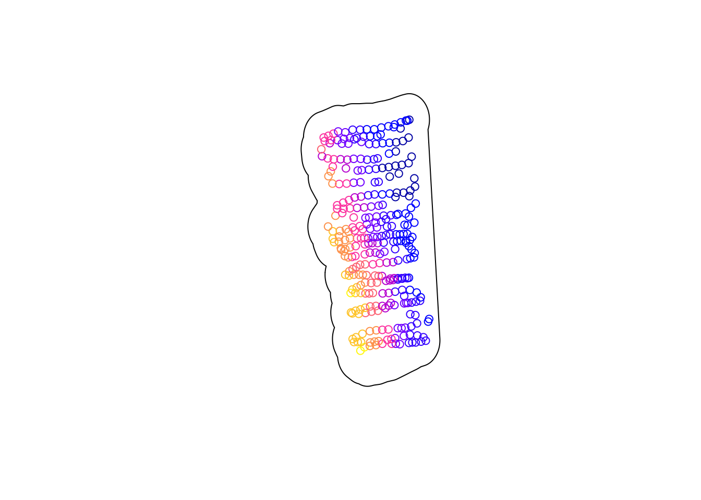

3 Elevation data of Experiment plot in North Agronomy Farm
The goal of this activity is to visualize the elevation data of an experimental site in the North Agronomy Farm at Kansas State University. Also my goal is to predict elevation with different models and infer at what location we observe the lowest and highest elevation point.
3.2 Kansas boundary
# Download shapefile of Kansas from census.gov
download.file("http://www2.census.gov/geo/tiger/GENZ2015/shp/cb_2015_us_state_20m.zip", destfile = "states.zip")
unzip("states.zip")
sf.us <- st_read("cb_2015_us_state_20m.shp")## Reading layer `cb_2015_us_state_20m' from data source
## `/Users/mariavalentinapereyrapicabea/Desktop/Maestria/Spring 2024/STAT 764/R STAT 764/bookdown/cb_2015_us_state_20m.shp'
## using driver `ESRI Shapefile'
## Simple feature collection with 52 features and 9 fields
## Geometry type: MULTIPOLYGON
## Dimension: XY
## Bounding box: xmin: -179.1743 ymin: 17.91377 xmax: 179.7739 ymax: 71.35256
## Geodetic CRS: NAD833.3 My data: North Agronomy Farm
# Make shapefile of study area around Manhattan KS
url <- "https://www.dropbox.com/scl/fi/b7d9254b8f26mhu6pc2km/Experiment_walk.gpx?rlkey=nmph96rzfz8rxmwxsxg3wn4p1&dl=1"
pt.study.area <- st_read(dsn=url,layer="track_points")## Reading layer `track_points' from data source
## `https://www.dropbox.com/scl/fi/b7d9254b8f26mhu6pc2km/Experiment_walk.gpx?rlkey=nmph96rzfz8rxmwxsxg3wn4p1&dl=1'
## using driver `GPX'
## Simple feature collection with 318 features and 26 fields
## Geometry type: POINT
## Dimension: XY
## Bounding box: xmin: -96.59412 ymin: 39.20585 xmax: -96.5938 ymax: 39.2064
## Geodetic CRS: WGS 84sf.study.area <- st_polygon(list(rbind(st_coordinates(pt.study.area),st_coordinates(pt.study.area)[1,])))
sf.study.area <- st_buffer(sf.study.area, .00006)
sf.study.area <- st_sf(st_sfc(sf.study.area), crs = crs(sf.kansas))
# Kansas + North farm data
{plot(sf.kansas,main="",col="white",xlim=c(-102.0517,-94.59193),ylim=c(36.99308,40.00308))
plot(sf.study.area, add=TRUE, col="red")}3.4 Extract elevation
url <- "https://www.dropbox.com/scl/fi/b7d9254b8f26mhu6pc2km/Experiment_walk.gpx?rlkey=nmph96rzfz8rxmwxsxg3wn4p1&dl=1"
pt.elev <- st_read(dsn=url,layer="track_points")## Reading layer `track_points' from data source
## `https://www.dropbox.com/scl/fi/b7d9254b8f26mhu6pc2km/Experiment_walk.gpx?rlkey=nmph96rzfz8rxmwxsxg3wn4p1&dl=1'
## using driver `GPX'
## Simple feature collection with 318 features and 26 fields
## Geometry type: POINT
## Dimension: XY
## Bounding box: xmin: -96.59412 ymin: 39.20585 xmax: -96.5938 ymax: 39.2064
## Geodetic CRS: WGS 843.5 Visualize boundary + elevation

## Min. 1st Qu. Median Mean 3rd Qu. Max.
## 333.2 333.5 333.6 333.7 333.8 334.2ggplot() +
geom_sf(data=sf.study.area) +
labs(subtitle = "North Agronomy Farm")+
geom_sf(data=pt.elev, aes(color = ele), size = 2)+
scale_color_gradient(low="blue", high="red", name = "Elevation (m)")+
theme(panel.background = element_blank(),
axis.text = element_blank())3.6 Models
3.6.1 1. Linear with iid errors
# Statistical analysis 1: non-hierarchical linear model with iid errors
m1 <- lm(elev~s1+I(s1^2)+s2+I(s2^2),data=df.elev)
# Make raster of study area to be able to map predictions from m1
rl.E.y_lin <- raster(,nrow=100,ncols=100,ext=extent(sf.study.area.utm),crs=crs(sf.study.area.utm))
# Make data.frame to be able to make predictions at each pixel (cell of raster)
df.pred <- data.frame(elev = NA,
s1 = xyFromCell(rl.E.y_lin,cell=1:length(rl.E.y_lin[]))[,1],
s2 = xyFromCell(rl.E.y_lin,cell=1:length(rl.E.y_lin[]))[,2])
# Make spatial predictions at each pixel
df.pred$elev <- predict(m1,df.pred[,2:3])
# View first 6 rows of predictions
head(df.pred) ## elev s1 s2
## 1 333.9162 707730.7 4342447
## 2 333.9042 707731.1 4342447
## 3 333.8923 707731.4 4342447
## 4 333.8803 707731.8 4342447
## 5 333.8684 707732.2 4342447
## 6 333.8564 707732.5 4342447# Fill raster file with predictions
rl.E.y_lin[] <- c(df.pred$elev)
rl.E.y_lin <- mask(rl.E.y_lin,sf.study.area.utm)
# Estimate coordinates and amount of maximum elevation
xyFromCell(rl.E.y_lin,cell=which.max(rl.E.y_lin[]))## x y
## [1,] 707740.3 4342381## [1] 334.2931# Plot estimate coordinates of maximum elevation
{plot(rl.E.y_lin, main = "Linear with iid errors") # Plot map of predictions
plot(sf.study.area.utm,add=TRUE)
points(xyFromCell(rl.E.y_lin,cell=which.max(rl.E.y_lin[])),col="purple",pch="*",cex=3)
points(xyFromCell(rl.E.y_lin,cell=which.min(rl.E.y_lin[])),col="blue",pch="*",cex=3)}
3.6.2 2. GAM
# Try low-rank Gaussian process (i.e., modern kriging model)
library(mgcv)
m1 <- gam(elev~s(s1,s2,bs="gp"),data=df.elev)
# Make raster of study area to be able to map predictions from m1
rl.E.y_gam <- raster(,nrow=100,ncols=100,ext=extent(sf.study.area.utm),crs=crs(sf.study.area.utm))
# Make data.frame to be able to make predictions at each pixel (cell of raster)
df.pred <- data.frame(elev = NA,
s1 = xyFromCell(rl.E.y_gam,cell=1:length(rl.E.y_gam[]))[,1],
s2 = xyFromCell(rl.E.y_gam,cell=1:length(rl.E.y_gam[]))[,2])
# Make spatial predictions at each pixel
df.pred$elev <- predict(m1,df.pred[,2:3])
# View first 6 rows of predictions
head(df.pred) ## elev s1 s2
## 1 333.8337 707730.7 4342447
## 2 333.8222 707731.1 4342447
## 3 333.8107 707731.4 4342447
## 4 333.7993 707731.8 4342447
## 5 333.7879 707732.2 4342447
## 6 333.7766 707732.5 4342447# Fill raster file with predictions
rl.E.y_gam[] <- c(df.pred$elev)
rl.E.y_gam <- mask(rl.E.y_gam,sf.study.area.utm)
# Estimate coordinates and amount of maximum elevation
xyFromCell(rl.E.y_gam,cell=which.max(rl.E.y_gam[]))## x y
## [1,] 707740.3 4342381## [1] 334.3422# Plot estimate coordinates of maximum elevation
{plot(rl.E.y_gam, main = "Generalized additive model") # Plot map of predictions
plot(sf.study.area.utm,add=TRUE)
points(xyFromCell(rl.E.y_gam,cell=which.max(rl.E.y_gam[])),col="purple",pch="*",cex=3)
points(xyFromCell(rl.E.y_lin,cell=which.min(rl.E.y_lin[])),col="blue",pch="*",cex=3)}
3.6.3 3. Regression tree
# Try a regression tree instead!
library(rpart)
m1 <- rpart(elev~s1+s2,data=df.elev)
# Make raster of study area to be able to map predictions from m1
rl.E.y_rt <- raster(,nrow=100,ncols=100,ext=extent(sf.study.area.utm),crs=crs(sf.study.area.utm))
# Make data.frame to be able to make predictions at each pixel (cell of raster)
df.pred <- data.frame(elev = NA,
s1 = xyFromCell(rl.E.y_rt,cell=1:length(rl.E.y_rt[]))[,1],
s2 = xyFromCell(rl.E.y_rt,cell=1:length(rl.E.y_rt[]))[,2])
# Make spatial predictions at each pixel
df.pred$elev <- predict(m1,df.pred[,2:3])
# View first 6 rows of predictions
head(df.pred) ## elev s1 s2
## 1 333.7143 707730.7 4342447
## 2 333.7143 707731.1 4342447
## 3 333.7143 707731.4 4342447
## 4 333.7143 707731.8 4342447
## 5 333.7143 707732.2 4342447
## 6 333.7143 707732.5 4342447# Fill raster file with predictions
rl.E.y_rt[] <- c(df.pred$elev)
rl.E.y_rt <- mask(rl.E.y_rt,sf.study.area.utm)
# Estimate coordinates and amount of maximum elevation
xyFromCell(rl.E.y_rt,cell=which.max(rl.E.y_rt[]))## x y
## [1,] 707737.7 4342400## [1] 334.0958# Plot estimate coordinates of maximum elevation
{plot(rl.E.y_rt, main = "Regression tree") # Plot map of predictions
plot(sf.study.area.utm,add=TRUE)
points(xyFromCell(rl.E.y_rt,cell=which.max(rl.E.y_rt[])),col="purple",pch="*",cex=3)
points(xyFromCell(rl.E.y_lin,cell=which.min(rl.E.y_lin[])),col="blue",pch="*",cex=3)}3.6.4 4. Support vector regression
# Try support vector regression (or machine)!
library(e1071)
m1 <- svm(elev~s1+s2,data=df.elev)
# Make raster of study area to be able to map predictions from m1
rl.E.y_svr <- raster(,nrow=100,ncols=100,ext=extent(sf.study.area.utm),crs=crs(sf.study.area.utm))
# Make data.frame to be able to make predictions at each pixel (cell of raster)
df.pred <- data.frame(elev = NA,
s1 = xyFromCell(rl.E.y_svr,cell=1:length(rl.E.y_svr[]))[,1],
s2 = xyFromCell(rl.E.y_svr,cell=1:length(rl.E.y_svr[]))[,2])
# Make spatial predictions at each pixel
df.pred$elev <- predict(m1,df.pred[,2:3])
# View first 6 rows of predictions
head(df.pred) ## elev s1 s2
## 1 333.7520 707730.7 4342447
## 2 333.7524 707731.1 4342447
## 3 333.7522 707731.4 4342447
## 4 333.7515 707731.8 4342447
## 5 333.7500 707732.2 4342447
## 6 333.7479 707732.5 4342447# Fill raster file with predictions
rl.E.y_svr[] <- c(df.pred$elev)
rl.E.y_svr <- mask(rl.E.y_svr,sf.study.area.utm)
# Estimate coordinates and amount of maximum elevation
xyFromCell(rl.E.y_svr,cell=which.max(rl.E.y_svr[]))## x y
## [1,] 707744 4342389## [1] 334.1314# Plot estimate coordinates of maximum elevation
{plot(rl.E.y_svr, main = "Support vector regression") # Plot map of predictions
plot(sf.study.area.utm,add=TRUE)
points(xyFromCell(rl.E.y_svr,cell=which.max(rl.E.y_svr[])),col="purple",pch="*",cex=3)
points(xyFromCell(rl.E.y_lin,cell=which.min(rl.E.y_lin[])),col="blue",pch="*",cex=3)}
3.6.5 5. Boosted regession tree
## Distribution not specified, assuming gaussian ...# Make raster of study area to be able to map predictions from m1
rl.E.y_gbm <- raster(,nrow=100,ncols=100,ext=extent(sf.study.area.utm),crs=crs(sf.study.area.utm))
# Make data.frame to be able to make predictions at each pixel (cell of raster)
df.pred <- data.frame(elev = NA,
s1 = xyFromCell(rl.E.y_gbm,cell=1:length(rl.E.y_gbm[]))[,1],
s2 = xyFromCell(rl.E.y_gbm,cell=1:length(rl.E.y_gbm[]))[,2])
# Make spatial predictions at each pixel
df.pred$elev <- predict(m1,df.pred[,2:3])
# View first 6 rows of predictions
head(df.pred) ## elev s1 s2
## 1 333.7946 707730.7 4342447
## 2 333.7946 707731.1 4342447
## 3 333.7946 707731.4 4342447
## 4 333.7946 707731.8 4342447
## 5 333.7946 707732.2 4342447
## 6 333.7946 707732.5 4342447# Fill raster file with predictions
rl.E.y_gbm[] <- c(df.pred$elev)
rl.E.y_gbm <- mask(rl.E.y_gbm,sf.study.area.utm)
# Estimate coordinates and amount of maximum elevation
xyFromCell(rl.E.y_gbm,cell=which.max(rl.E.y_gbm[]))## x y
## [1,] 707739.5 4342392## [1] 334.1906# Plot estimate coordinates of maximum elevation
{plot(rl.E.y_gbm, main = "Boosted regression tree") # Plot map of predictions
plot(sf.study.area.utm,add=TRUE)
points(xyFromCell(rl.E.y_gbm,cell=which.max(rl.E.y_gbm[])),col="purple",pch="*",cex=3)
points(xyFromCell(rl.E.y_lin,cell=which.min(rl.E.y_lin[])),col="blue",pch="*",cex=3)}